王红元
微博：coderwhy
微信：372623326


 内容概述
内容概述
认识Vuejs
为什么学习Vuejs
简单认识一下Vuejs
Vuejs安装方式
CDN引入
下载和引入
NPM安装管理
Vuejs初体验
Hello Vuejs
Vue列表展示
案例：计数器
Vuejs的MVVM

Vue中的MVVM

 为什么学习Vuejs？
为什么学习Vuejs？
我相信每个人学习Vue的目的是各部相同的。
可能你的公司正要将原有的项目使用Vue进行重构。
也可能是你的公司新项目决定使用Vue的技术栈。
当然，如果你现在正在换工作，你会发现招聘前端的需求中，10个有8个都对Vue有或多或少的要求。

当然，作为学习者我们知道Vuejs目前非常火，可以说是前端必备的一个技能。
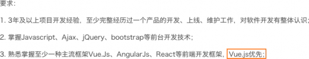 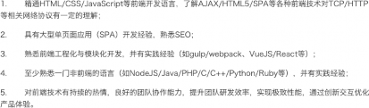
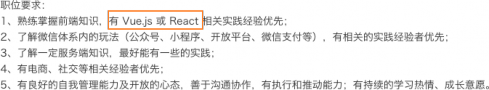 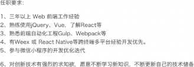

 简单认识一下Vuejs
简单认识一下Vuejs
Vue (读音 /vjuː/，类似于 view)，不要读错。
Vue是一个渐进式的框架，什么是渐进式的呢？
渐进式意味着你可以将Vue作为你应用的一部分嵌入其中，带来更丰富的交互体验。
或者如果你希望将更多的业务逻辑使用Vue实现，那么Vue的核心库以及其生态系统。
比如Core+Vue-router+Vuex，也可以满足你各种各样的需求。
Vue有很多特点和Web开发中常见的高级功能
解耦视图和数据
可复用的组件
前端路由技术
状态管理
虚拟DOM
这些特点，你不需要一个个去记住，我们在后面的学习和开发中都会慢慢体会到的，一些技术点我也会在后面进行讲解。
学习Vuejs的前提？
从零学习Vue开发，并不需要你具备其他类似于Angular、React，甚至是jQuery的经验。

但是你需要具备一定的HTML、CSS、JavaScript基础。

 Vue.js安装
Vue.js安装
使用一个框架，我们第一步要做什么呢？安装下载它
安装Vue的方式有很多：
方式一：直接CDN引入
你可以选择引入开发环境版本还是生产环境版本
<!-- 开发环境版本，包含了有帮助的命令行警告 -->
<script src="https://cdn.jsdelivr.net/npm/vue/dist/vue.js"></script>
<!-- 生产环境版本，优化了尺寸和速度 -->
<script src="https://cdn.jsdelivr.net/npm/vue"></script>
方式二：下载和引入
开发环境 https://vuejs.org/js/vue.js
生产环境 https://vuejs.org/js/vue.min.js
方式三：NPM安装

后续通过webpack和CLI的使用，我们使用该方式。

 Hello Vuejs
Hello Vuejs
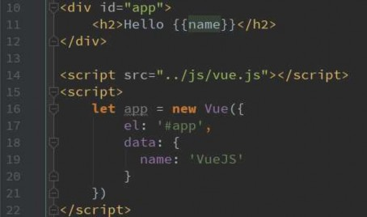
我们来做我们的第一个Vue程序，体验一下Vue的响应式
代码做了什么事情？
我们来阅读JavaScript代码，会发现创建了一个Vue对象。
创建Vue对象的时候，传入了一些options：{}
{}中包含了el属性：该属性决定了这个Vue对象挂载到哪一个元素
上，很明显，我们这里是挂载到了id为app的元素上
{}中包含了data属性：该属性中通常会存储一些数据
这些数据可以是我们直接定义出来的，比如像上面这样。
也可能是来自网络，从服务器加载的。
浏览器执行代码的流程：
执行到10~13行代码显然出对应的HTML
执行第16行代码创建Vue实例，并且对原HTML进行解析和修改。

并且，目前我们的代码是可以做到响应式的。

 Vue列表显示
Vue列表显示
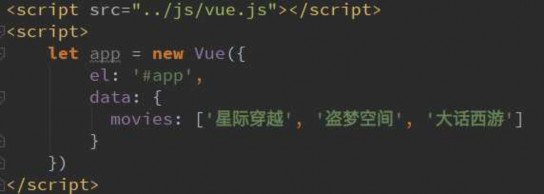
现在，我们来展示一个更加复杂的数据：数据列表。
比如我们现在从服务器请求过来一个列表
希望展示到HTML中。
HTML代码中，使用v-for指令
该指令我们后面会详细讲解，这里先学会使用。
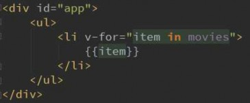
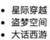
是不是变得So Easy，我们再也不需要在JavaScript
代码中完成DOM的拼接相关操作了
而且，更重要的是，它还是响应式的。
也就是说，当我们数组中的数据发生改变时，
界面会自动改变。

依然让我们打开开发者模式的console，来试一
下

 案例：计数器
案例：计数器
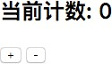
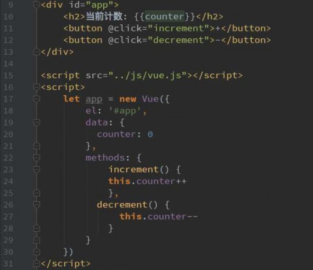
现在，我们来实现一个小的计数器
点击 + 计数器+1
点击 - 计数器 -1
这里，我们又要使用新的指令和属性了
新的属性：methods，该属性用于在Vue对象中定
义方法。
新的指令：@click, 该指令用于监听某个元素的点
击事件，并且需要指定当发生点击时，执行的方法
(方法通常是methods中定义的方法)
你可能会疑惑？
这些@click是什么东西？
Vue对象中又是定义el/data/methods，到底都有
哪些东西可以定义，以及它们的作用是什么？

这些疑惑在后续学习中都会一一解开。

 Vue中的MVVM
Vue中的MVVM
什么是MVVM呢？
通常我们学习一个概念，最好的方式是去看维基百科(对，千万别看成了百度百科)
View层：
视图层
在我们前端开发中，通常就是DOM层。
主要的作用是给用户展示各种信息。
Model层：
数据层
数据可能是我们固定的死数据，更多的是来自我们服务
器，从网络上请求下来的数据。
在我们计数器的案例中，就是后面抽取出来的obj，当
然，里面的数据可能没有这么简单。
VueModel层：
视图模型层
视图模型层是View和Model沟通的桥梁。
一方面它实现了Data Binding，也就是数据绑定，将
Model的改变实时的反应到View中
另一方面它实现了DOM Listener，也就是DOM监听，当
DOM发生一些事件(点击、滚动、touch等)时，可以监听
到，并在需要的情况下改变对应的Data。
https://zh.wikipedia.org/wiki/MVVM
维基百科的官方解释，我们这里不再赘述。

我们直接来看Vue的MVVM
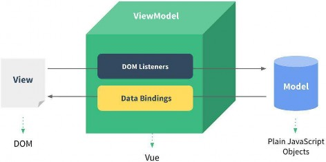

 计数器的MVVM
计数器的MVVM
计数器的MVVM
我们的计数器中就有严格的MVVM思想
View依然是我们的DOM
Model就是我们我们抽离出来的obj
ViewModel就是我们创建的Vue对象实例
它们之间如何工作呢？
首先ViewModel通过Data Binding让obj中的数据实时的在DOM中显示。
其次ViewModel通过DOM Listener来监听DOM事件，并且通过methods中的操作，来改变obj中的数
据。

有了Vue帮助我们完成VueModel层的任务，在后续的开发，我们就可以专注于数据的处理，以及DOM的编写工
作了。

 创建Vue实例传入的options
创建Vue实例传入的options
你会发现，我们在创建Vue实例的时候，传入了一个对象options。
这个options中可以包含哪些选项呢？
详细解析： https://cn.vuejs.org/v2/api/#%E9%80%89%E9%A1%B9-%E6%95%B0%E6%8D%AE
目前掌握这些选项：
类型：string | HTMLElement
作用：决定之后Vue实例会管理哪一个DOM。
类型：Object | Function （组件当中data必须是一个函数）
作用：Vue实例对应的数据对象。
类型：{ [key: string]: Function }

作用：定义属于Vue的一些方法，可以在其他地方调用，也可以在指令中使用。


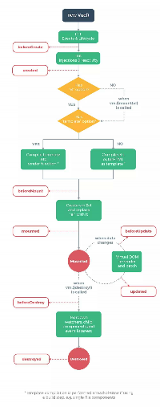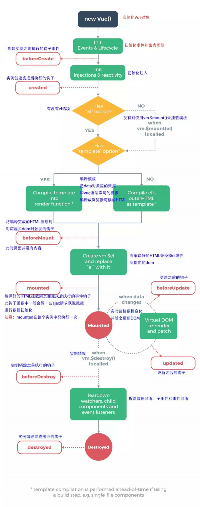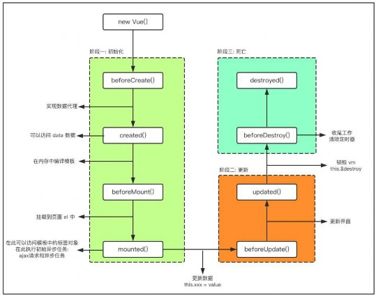
 Vue的生命周期
Vue的生命周期